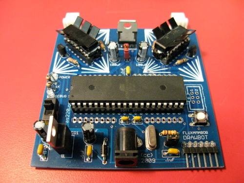
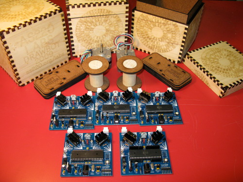

Two motors, some monofilament, a binder clip, a Sharpie and an Arduino-compatible controller. It draws cubic Bezier curves, circles, and can move from one point to another accurately. This drawbot was inspired by Tristan Perich's 2005 installation in the AS220 stairwell.
